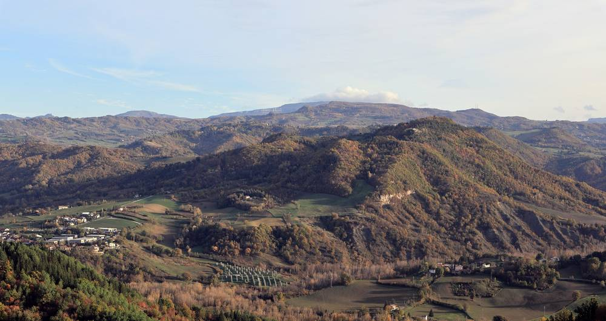

이탈리아 세티 교수, 이웃끼리 나눠 쓰는 태양광 전기를 공공재로…법정 고정가 도입하면 전기요금 20~30% 줄어든다

볼로냐대 교수가 11일 라벤나 강연 앞두고 제안 설명…2차 변전소 45만 곳 아래 공유 전력을 시장에서 떼어 kWh당 8.5센트 예시, 망 요금도 쓴 구간만큼만
이탈리아 볼로냐대학교에서 재생에너지와 에너지 계획을 가르치는 레오나르도 세티 교수가 같은 동네 변전 설비 아래에서 이웃끼리 나눠 쓰는 태양광 전기를 공공재로 인정하자고 제안했다. 이탈리아에는 2차 변전소가 약 45만 곳 있고 한 곳이 평균 100~150곳의 전기 사용처를 맡는데, 지붕 태양광의 남는 전기는 대개 이 안에서 이웃이 쓰게 된다는 것이 출발점이다. 세티 교수는 이 공유 전력을 도매시장에서 떼어 법으로 정한 고정가, 예컨대 kWh당 8.5센트를 생산자에게 주고 망 요금도 실제로 쓴 마지막 구간만큼만 내게 하자고 했으며, 지금 소비자가 내는 값은 kWh당 20~21센트, 많게는 31센트라고 비교했다. 공유 전력이 소비의 약 30%를 차지한다고 보면 연구진 모의계산으로 가구 전기요금이 20~30% 줄고, 이 혜택은 태양광이 없는 집에도 돌아간다는 설명이다. 그는 공유 전력을 인정하면 태양광이 "동네 전체의 기회"가 될 수 있다고 말했으며, 11일 저녁 라벤나에서 열리는 기후 강연회에서 이 모델을 소개한다.
시민에너지 관점
세티 교수 연구진은 수요의 약 70%를 동네 단위 분산 생산으로 채울 수 있고, 스페인은 이미 공유 전력의 망 요금을 70% 가까이 깎아 주고 있다고 본다. 지붕을 가진 사람만 이익을 본다는 비판에 대해, 공유 전력에 공공 가격을 매기면 세입자와 저소득 가구도 이웃 태양광의 혜택을 받는다는 점이 이 제안의 핵심이다. 전기가 이미 동네 안에서 오가고 있는데 값과 요금은 먼 대형 발전소 기준으로 매기는 구조를 바꿔야, 시민이 생산자이자 주인이 되는 에너지 전환이 가능하다. 우리도 공동주택·마을 단위 태양광 전기를 이웃과 나눌 때 망 요금을 낮춰 주는 제도부터 검토해야 한다.
출처: Ravenna Notizie 2026-11-09 Claudia Folli 원문 보기
イタリアのセッティ教授、隣同士で分け合う太陽光の電気を公共財に…法定固定価格を導入すれば電気料金20〜30%減
ボローニャ大学教授が11日のラヴェンナ講演を前に提案を説明…約45万か所の二次変電所の下の共有電力を市場から切り離し1kWh8.5セントを例示、送配電料金も使った区間分だけ
イタリア・ボローニャ大学で再生可能エネルギーとエネルギー計画を教えるレオナルド・セッティ教授が、同じ地域の変電設備の下で隣同士が分け合う太陽光の電気を公共財として認めようと提案した。イタリアには二次変電所が約45万か所あり、1か所が平均100〜150の電力利用先を受け持っているが、屋根の太陽光の余った電気はたいていその中で隣人が使うことになる、というのが出発点だ。セッティ教授は、この共有電力を卸売市場から切り離し、法で定めた固定価格、例えば1kWhあたり8.5セントを生産者に支払い、送配電料金も実際に使った最後の区間の分だけ払うようにすべきだとし、現在消費者が払う価格は1kWhあたり20〜21セント、高い場合は31セントだと比べた。共有電力が消費の約30%を占めるとすると、研究チームの試算で家庭の電気料金は20〜30%下がり、この恩恵は太陽光のない家にも及ぶという。教授は、共有電力を認めれば太陽光が「地域全体の機会」になり得ると述べ、11日夜にラヴェンナで開かれる気候講演会でこのモデルを紹介する。
市民エネルギーの視点
セッティ教授の研究チームは、需要の約70%を地域単位の分散型発電で賄えるとみており、スペインはすでに共有電力の送配電料金を70%近く減額している。屋根を持つ人だけが得をするという批判に対し、共有電力に公共の価格をつければ、借家人や低所得世帯も隣の太陽光の恩恵を受けられるという点がこの提案の核心だ。電気はすでに地域の中で行き来しているのに、価格と料金は遠くの大型発電所を基準に決める仕組みを変えてこそ、市民が生産者であり所有者となるエネルギー転換が可能になる。韓国でも、集合住宅や集落単位の太陽光の電気を隣人と分け合う際に送配電料金を下げる制度から検討すべきだ。
出典: Ravenna Notizie 2026-11-09 Claudia Folli 原文を読む
意大利塞蒂教授提议将邻里共享的光伏电力视为公共物品…引入法定固定价格可使电费下降20%至30%
博洛尼亚大学教授在11日拉韦纳讲座前阐述提案…将约45万座二级变电站下的共享电力从市场剥离，举例每千瓦时8.5欧分，电网费用只按实际使用区段计收
在意大利博洛尼亚大学讲授可再生能源与能源规划的莱昂纳多·塞蒂教授提议，把同一片区变电设施下邻里之间共享的光伏电力认定为公共物品。他的出发点是：意大利约有45万座二级变电站，每座平均服务100至150个用电户，屋顶光伏的富余电力大多就在这一范围内被邻居用掉。塞蒂教授主张，将这部分共享电力从批发市场中剥离，以法定固定价格（例如每千瓦时8.5欧分）支付给生产者，电网费用也只按实际使用的最后一段线路收取；他对比称，目前消费者支付的价格为每千瓦时20至21欧分，最高达31欧分。按共享电力约占用电量30%计算，研究团队的模拟显示家庭电费可下降20%至30%，而且没有安装光伏的家庭也能受益。他表示，承认共享电力后，光伏可以成为“整个街区的机会”；他将于11日晚在拉韦纳举行的气候讲座上介绍这一模式。
市民能源视角
塞蒂教授的研究团队认为，约70%的需求可以由街区层面的分布式发电满足，而西班牙已对共享电力的电网费用减免近70%。针对只有拥有屋顶的人才能获益的批评，这一提案的核心在于：给共享电力定下公共价格后，租户和低收入家庭也能享受邻居光伏带来的好处。电力早已在街区内部流动，价格和收费却仍以遥远的大型电厂为标准，只有改变这种结构，市民成为生产者和所有者的能源转型才有可能实现。韩国也应首先研究，在公寓或村庄层面与邻居分享光伏电力时降低电网费用的制度。
来源: Ravenna Notizie 2026-11-09 Claudia Folli 查看原文
Italian Professor Setti Proposes Treating Solar Power Shared Between Neighbours as a Commons; Statutory Fixed Price Could Cut Bills 20–30%
University of Bologna professor outlines the idea ahead of an 11 November talk in Ravenna: take power shared under Italy's roughly 450,000 secondary substations out of the market at an example 8.5 cents per kWh, and charge grid fees only for the stretch used
Leonardo Setti, who teaches renewable energy and energy planning at the University of Bologna, has proposed recognising solar power that neighbours share beneath the same local substation as a common good. His starting point is that Italy has about 450,000 secondary substations, each serving an average of 100 to 150 connection points, and that surplus power from rooftop solar is mostly consumed by neighbours within that area. Setti argues that this shared power should be taken out of the wholesale market, with producers paid a price fixed by law, for example 8.5 cents per kWh, and grid charges limited to the last stretch of network actually used; he compared this with the 20 to 21 cents, and up to 31 cents, per kWh that consumers pay now. If shared power makes up about 30% of consumption, his team's simulations show household bills falling by 20 to 30%, with the benefit reaching homes that have no solar panels. Recognising shared energy, he said, could make solar "an opportunity for the whole neighbourhood"; he will present the model at a climate talk in Ravenna on the evening of the 11th.
Citizen Energy View
Setti's team estimates that around 70% of demand could be met by distributed generation at neighbourhood level, and Spain already cuts grid charges on shared power by close to 70%. Against the criticism that only people with roofs gain, the core of the proposal is that a public price for shared power lets tenants and low-income households benefit from their neighbours' solar too. Power already flows within neighbourhoods, yet prices and charges are still set as if it came from distant large plants; only by changing that can an energy transition in which citizens are producers and owners take hold. Korea, too, should start by examining rules that lower grid charges when solar power from apartment blocks or villages is shared with neighbours.
Source: Ravenna Notizie 2026-11-09 Claudia Folli Read the original